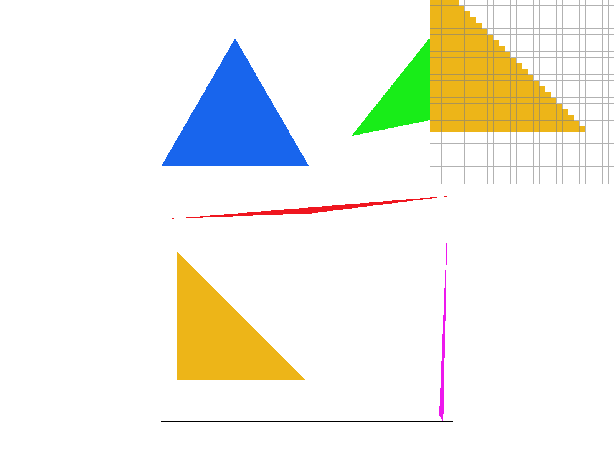

CS184/284A Spring 2025 Homework 1 Write-Up
Names:
Link to webpage: cs184.eecs.berkeley.edu/sp25
Link to GitHub repository: (TODO) cs184.eecs.berkeley.edu/sp25

Overview
Give a high-level overview of what you implemented in this homework. Think about what you've built as a whole. Share your thoughts on what interesting things you've learned from completing the homework.Task 1: Drawing Single-Color Triangles
In this task, I want to be able to rasterize triangles by implementing an algorithm that checks whether a point exists within each triangle I want to draw. I know that I can first make a slight optimization by calculating a bounding box. Since I don't want to have to iterate through every pixel, I find the minimum and maximum x and y values for the vertices of the triangle, creating a bounded box around the triangle, and only iterate across those. This increases performance because I don't waste extra compute time checking pixels that can't possibly be within the triangle.Now that I have a bound on my x and y values, I just have to iterate through each point and test if it's within the triangle. I can do this by performing a three line test, where I calculate the cross product of the vectors formed by the point and the vertices of the triangle. If the product is positive for all three vertices, I know the point is within the triangle, so long as the points for the triangle I had received were in counter clockwise order, and I colored it accordingly. To account for this counter clockwise order, before performing this test, I take the cross product of the vectors formed by the vertices of the triangle and check if the result is positive. If it is, I know the points are in counter clockwise order. If it is not, I simply swap two vertices for my test.
|

|
Since my algorithm calculates and iterates over the smallest possible bounding box, it is adequately fast, but I wanted to see if I could improve performance. To further optimize my algorithm, I made two major changes. First, I recognized I was calculating constants for my cross product test each time I checked a pixel, when I could just store those values ahead of looping and access them at will. Additionally, I realized that I was checking pixels that I could easily tell were not in the triangle. When iterating through the bounding box, if I entered the triangle and then found myself outside of the triangle, I could skip the rest of the pixels in that row, as they would not be in the triangle. This optimization was especially useful for varying triangle shapes where my bounding box was much larger than the triangle itself.
To validate this bump in performance, I rasterized two images, seen in figures 2 and 3, with the same triangles but one without any of my optimizations and one with both optimizations. In the below table, you can see the total time it took to rasterize each image in milliseconds. I did two tests for each image to ensure consistency. Notice that with my optimizations, the algorithm is about 25% faster for the first image and 20% faster for the second image.
| Figure 2: Pre-Optimized | Figure 2: Post-Optimized | Figure 3: Pre-Optimized | Figure 3: Post-Optimized |
|---|---|---|---|
| 9.672 | 7.321 | 1.186 | 0.932 |
| 9.745 | 7.355 | 1.198 | 0.929 |

|

|
Task 2: Antialiasing by Supersampling
In order to antialias, I implemented supersampling in my triangle rasterization. In supersampling, instead of taking one sample per point, I take multiple samples per point. This allows us to gather more information about each pixel and create a smoother image because we can better account for points that fall on the edge of a triangle. For example, if a pixel is cut in half by the edge of a triangle, with half the pixel inside the triangle and the other half outside, my old algorithm would either call this pixel all inside or all outside of the triangle. If instead we take multiple samples for this pixel from both the inside and the outside of the triangle, I can assign that pixel an average of both the inside and outside of the triangle, making it less harsh of a transition.To do this, I essentially pretend that I'm rasterizing a triangle with a higher resolution than I actually am. I take the sample rate, which is the number of samples I want to take per pixel, and divide the pixel into a grid of that size. I then iterate through each of these samples and check if they are within the triangle. To accomodate the rasterization pipeline I already have, I have to make sure my sample_buffer is appropriately sized to accomodate this jump in resolution, so I have to multiply the width and height of the image by the sample rate. Additionally, after I'm done rasterizing the triangle the traditional way and storing it in my sample_buffer, I have to then downsample by figuring out which samples belong to what pixel and averaging them, reducing the resolution back to the original size.
In the below images, there is a contrast primarily in the pink and red triangles as you go from Figure 1.1 to Figure 1.3. As the sample rate increases, the line work between triangles becomes smoother. Following the inspector portion of each figure, parts of the triangles that are white or not apart of the triangle in Figure 1.1 are now a light pink in Figure 1.3. This showcases the aforementioned issue with basic rasterization because it can be seen that so many additional pixels are apart of the edge case of being only partially in the triangle.
|
|
|
|
|
Task 3: Transforms
After implementing three transform processes for polygons, (translations, rotations, and scaling) I have attempted to render a robot doing a classic Willem Dafoe stance. In it, my robot does somewhat of a split, with each leg going almost all the way to the ground. Additionally, the robot's arms are tight behind its back, similar to Willem Dafoe in his iconic image.I have included a side by side comparison of the robot and Willem Dafoe in the splits for reference.
|
|
|
Task 4: Barycentric coordinates
Barycentric coordinates help interpolate values across a triangle. What this means is that I can take a point within a triangle and find information about that point, in this case color, by using barycentric coordinates to compute a weighted average of the colors of the vertices of the triangle. Note that barycentric coordinates can be used for more than just color interpolation, but for this task, I will be using them to interpolate color.Alpha, beta, and gamma (our barycentric coordinates) are used to represent the weights of the distance from each point to each vertex of the triangle. I can then use this information to calculate the color of the point by multiplying the color of each vertex by the corresponding weight and summing them like so:
color_xy = alpha * color0 + beta * color1 + gamma * color2, where color0 corresponds to the color of the first vertex of the triangle and so on.
As an example, figure 4.1 below shows a triangle where the color of each vertex is red, green, and blue, respectively. Instead of rasterizing the triangle with a single color, I use barycentric coordinates to calculate the color of each pixel within the triangle. That's why the triangle appears to be a gradient of colors, and as you go close to the vertices, the colors become more saturated.
To implement this, I follow the same rasterization process as before, but instead of filling each pixel with a solid color, I calculate the barycentric coordinates of the location of the pixel within the triangle and use those alongside the three color parameters to calculate the color of the pixel.
|
|

|
Task 5: "Pixel sampling" for texture mapping
In pixel sampling, what I'm trying to accomplish is a process of sampling a texture at a given point and then assigning the texture's color to the point I'm trying to render. In order to do this, I build off of my previous implementation of interpolation using barycentric coordinates. To sample a texture, I need to go from my rendering space to my texture space, which I do by taking the barycentric coordinates of the point I'm trying to render and multiplying them by the texture coordinates of the vertices of the triangle.From here, I can either use nearest neighbor sampling or bilinear sampling to get the color of the texture at the point I'm trying to render. In nearest neighbor sampling, I simply find the nearest texel (or texture pixel) to the point I'm trying to render and return that color. In bilinear sampling, I instead get the colors of the four nearest texels to the point I'm trying to render and interpolate between them to get the color of the point I'm trying to render.
Below, I have four renders that display the same image with nearest neighbor sampling and bilinear sampling. There are sharp differences even without changing the sampling rate. Notice the inspector tool between figure 5.1 and 5.3. You can see that the colors in figure 5.1 are less smooth and the line work is more jagged than in figure 5.3. Bilinear sampling does a better job of smoothing out the colors and lines for the same reason it does in supersampling, by taking more samples and interpolating between them.
Bilinear sampling will look noticeably different from nearest neighbor when there are large differences in color between texels, as seen in the below images. Meanwhile, nearest neighbor sampling may look "better" or the same as bilinear sampling when the texels are similar in color, notably the ocean in all figures below.
|
|
|

|
|
Task 6: "Level Sampling" with mipmaps for texture mapping
Level sampling is a process of sampling that utilizes mipmaps, which are precomputed textures at different resolutions. These textures are precomputed by downsampling, which is a process I used in supersampling. By using mipmaps, I can sample the texture at the resolution that is closest to what I want, which can save on performance because I don't have to do the downsampling on the fly. For this task, I mostly built off of my previous implementation of texture mapping, but I now have to consider which mipmap level I want to sample from. In order to find this, I compute du/dx, du/dy and dv/dx, dv/dy, which are the partial derivatives of the texture coordinates with respect to the screen coordinates, by converting (x+1, y) and (x, y+1) to texture coordinates and taking the difference. I additionally have to scale up the derivatives, since mipmaps are a downsampling and I need to account for the difference in resolution. Once I have these partial derivatives, I can simply calculate the level of each mipmaps by takinglog(max(sqrt(du/dx^2 + dv/dx^2)), (sqrt(du/dy^2 + dv/dy^2))).
Like pixel sampling, I incorporated two methods of level sampling, which use nearest neighbor sampling or bilinear sampling to get the color of the texture at the point I'm trying to render. To do this, once I've calculated the level of the mipmaps, I may not have an integer. Therefore, if I want to sample from the nearest level, I round the level to the nearest integer. Likewise, with bilinear sampling, I take the floor and ceiling of the level and interpolate between the two levels to get the color of the point I'm trying to render. This is very similar to what I did in pixel sampling, but here I'm considering the level of the mipmaps I want to sample from.
In the below, I showcase key differences between level sampling with nearest neighbor sampling and bilinear sampling. In figure 6.1, there is no level sampling, and I show nearest neighbor muchlike I've shown in task 5. In figure 6.2, I'm once again only showcasing bilinear sampling. For figures 6.3 and 6.4, I show nearest level sampling with nearest neighbor and bilinear sampling, respectively.
|
|
|
|
|
|
Now that I've seen various techniques for sampling, it can be good to go over key differences between them. Pixel Sampling: is seemingly one of the fastest techniques. Since it requires the least computationally and doesn't store a lot of memory, it's one of the least costly in terms of memory and speed; however, it doesn't do a great job at antialiasing. While nearest pixel sampling doesn't do much to reduce antialiasing, bilinear sampling may even blur the render more than desired.
Level Sampling: is likely a bit slower than pixel sampling. Since it precomputes many textures, it's still quite fast but requires a lot more memory. Since level sampling stores several textures of varying resolutions, it can be quite costly; however, it does a much better job at antialising than pixel sampling. It is a very effective tool for anti aliasing, and even basic level sampling can do better than pixel sampling, which you can even see in the examples above.
Supersampling: is likely the slowest of the three techniques. It requires the most computation and memory, because it's sampling multiple times per pixel and storing all of that information. With this in mind, it's likely the most expensive in terms of computation and memory, but it also does the best job of antialiasing. This makes sense because it's using the most information, which is the most costly but also the most helpful.